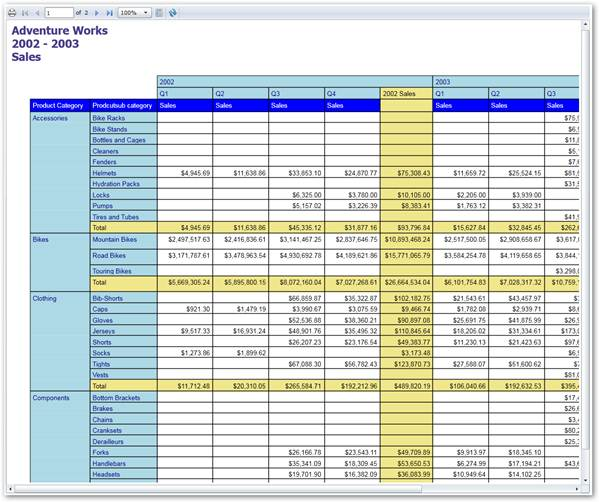

You can show RDLC reports in Report Viewer using the following steps.
1. Create new Silverlight application and necessary assemblies with Silverlight project.
2. To load RDLC reports from local machine, initialize Report Viewer control and set the ReportPath.
// ReportViewer control initialization.Syncfusion.Windows.Reports.Viewer.ReportViewer reportViewer1 = new Syncfusion.Window s.Reports.Viewer.ReportViewer(); // Retrieve Report from application resource.Stream rdlStream = Application.GetResourceStream(new Uri("CompanySalesDemo;component /ReportTemplate/Company Sales.rdl", UriKind.Relative)).Stream; // Load the Report from Stream.reportViewer1.LoadReport(rdlStream); |
 Note: To load company sales report, you can use
following installed sample location.
Note: To load company sales report, you can use
following installed sample location.
<Installed Location>\Syncfusion\EssentialStudio\<Version Number>\Samples\Silverlight\ReportViewer.Silverlight\Product Showcase\CompanySalesDemo\ReportTemplate
3. Set the DataSources to view the report in Report Viewer.
reportViewer1.DataSources.Clear();reportViewer1.DataSources.Add(new Syncfusion.Windows.Reports.ReportDataSource { Name = "Sales", Value = new AdventureWorks().GetData() }); |
Note:
AdventureWorks().GetData() information can be obtained from the following
installed sample location.
<Installed Location>\Syncfusion\EssentialStudio\<Version Number>\Samples\Silverlight\ReportViewer.Silverlight\Product Showcase\CompanySalesDemo\DataSource.cs
4. Use the RefreshReport method to render the report in Report Viewer.
this.Loaded += (sender, arg) => {// To Render the Report in ReportViewer. reportViewer1.RefreshReport();}; |
5. Run the application. The following output displays.

Figure 29: ReportViewer Sample